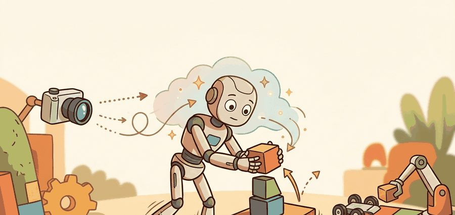
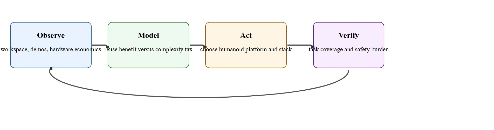

"Humanoids became interesting when data, hardware cost, and human-shaped environments finally started pointing in the same direction."
A Systems Strategy Memo

This section assumes familiarity with floating-base kinematics from section 7.6 and with teleoperation data pipelines from section 23.2. The morphology-versus-task-coverage argument introduced here is extended in section 46.2 (platform hardware comparison) and section 46.3 (whole-body control formulations). The data-reuse logic recurs in Part VII alongside robot foundation models and cross-embodiment transfer (module 35).
A Figure 02 robot walks up to a warehouse shelf, reaches for a bin at shoulder height, and places it on a cart. No ramp was built for it. No shelf was moved. The entire facility was designed for a human body, and the robot fits. That convergence, morphology matching the environment, demonstrations matching the body, and hardware costs finally approaching industrial labor rates, is why humanoids went from a research curiosity to a serious commercial bet in roughly five years. This section maps the three forces (data, morphology, hardware cost) that drove that shift and examines when a humanoid platform genuinely outperforms a cheaper alternative.
A common assumption is that humanoids became the dominant research platform because the human body shape is the optimal morphology for general manipulation and locomotion. This is incorrect. Human shape is not globally optimal; it is locally compatible with an infrastructure, a data ecosystem, and an economics window that happened to converge at the same moment. A humanoid struggles where that infrastructure does not exist (underwater pipelines, aircraft fuselages, microgravity), and a cheaper morphology frequently outperforms it on flat-floor tasks that do not require stairs, crouching, or dual-arm bimanual reach. The correct mental model is that humanoids won because the cost of reusing human environments and human demonstration data outweighed the control complexity penalty, not because bipedal arms-and-legs is the universal best design.
As Figure 46.1A captures, humanoids are attractive because the world is already instrumented for the human body. Stairs, shelving, door handles, carts, bins, hand tools, and workstation heights create a large prior in favor of bipedal reach and dual-arm manipulation. That prior reduces environment redesign cost, even if it increases control complexity.
The second driver is data. Teleoperation, motion capture, video-to-motion pipelines, and imitation learning all yield richer supervision when the robot body and the human body share coarse kinematic affordances. The HumanPlus team (Fu et al. 2024, Stanford) exploited this property to shadow a Unitree H1 directly from a single RGB camera of a human. The property is morphological compatibility with human data. Demonstration data encodes actions as joint trajectories tied to a specific body geometry. When the demonstrator's reach, wrist range, and finger span differ sharply from the robot's, the system must solve an inverse-kinematics problem, where the target is to find joint angles that place the robot's end-effector at the recorded human hand position, to retarget each trajectory. That problem often has no valid solution, so engineers discard large fractions of expensive data. Morphological compatibility cuts that retargeting gap. In practice, teams working with non-humanoid arms have reported discarding 60 to 80 percent of collected demonstrations because no valid retargeted pose exists; with a morphologically compatible humanoid body, the same recordings slot in with only minor joint-limit trimming, turning a 10-hour collection session into ten usable hours instead of two. A human teleoperator wearing wrist-tracked gloves can map their own arm motion almost directly onto a humanoid end-effector. The supervision signal then reaches the policy with minimal geometric distortion. This is the mechanism behind the section title's "data" claim: humanoid morphology does not just look similar to a human body, it changes how much of the collected demonstration data survives the retargeting step described above and becomes usable training data.
Think of transcribing a piano score for a guitar: if the instruments share a similar pitch range and fingering span, most notes transfer directly. If one instrument has three times the string length of the other, you must rewrite every chord, and some passages simply have no valid equivalent. Morphological compatibility is the same idea applied to motion: when the robot arm is roughly the same length and range as the human arm doing the demonstration, the recorded joint angles slot in almost unchanged. When the proportions diverge sharply, a separate mathematical rewrite is required for every motion, and many demonstrations must be discarded entirely because no valid robot pose exists that matches the intended position in space.
Those falling hardware costs stop being abstract the moment you attach specific price tags to specific platforms. Figure AI's Figure 02 and Apptronik Apollo both targeted a purchase price under $70,000 (as of 2024). That threshold begins to compete with the loaded annual cost of a human warehouse worker in the United States. Boston Dynamics reported Atlas performing pick-and-place cycles in under 4 seconds per item in controlled demos (2024), which the company characterized as approaching human throughput for the same task; controlled demo conditions typically favor the robot more than an unstructured production floor would. The ALOHA 2 teleoperation platform collected roughly 50 hours of bimanual demonstration data to train policies that generalize across 20 household manipulation tasks. A non-humanoid body performing the same tasks would typically require substantially more demonstration hours to reach comparable generalization, since less of that data can be reused without retargeting.
So far: falling actuator and platform prices (Figure 02, Apollo), pick-and-place cycle times approaching human throughput (Atlas), and small demonstration datasets that generalize across many tasks (ALOHA 2) are three separate pieces of evidence for the same claim, that humanoid hardware economics crossed a viability threshold around 2024.
Humanoids win when reusing human spaces and human data is worth the control and safety complexity they introduce.
A robot shaped like a person does not inherit human capability; it inherits human infrastructure, and that inheritance is the entire bet. Figure 46.1.1 below traces this argument as a closed decision loop, from observing the workspace and data through modeling the tradeoff, acting on a platform choice, and verifying the outcome before the loop repeats.

The preceding walkthrough of data, morphology, and hardware cost was told through concrete examples (HumanPlus, Figure 02, ALOHA 2); this Theory section now restates the same three drivers as a general framework so the argument can be applied to platforms not yet named.
The humanoid case rests on three kinds of reuse. Task reuse: existing job definitions map onto two arms, two legs, and a torso. Data reuse: human demonstrations and videos supply meaningful supervision. Infrastructure reuse: doors, shelves, ladders, tools, and aisles need no wholesale redesign.
These benefits compete with the floating-base control problem. Humanoids are underactuated (they have fewer independently driven joints than degrees of freedom needed to control every aspect of body position at once, so balance and motion cannot be commanded independently), contact-rich, and safety-critical. So the right question is always comparative: does a humanoid solve enough more valuable tasks than a mobile manipulator or fixed arm to justify the added complexity?
A fixed industrial arm has a guaranteed stable base; the controller only needs to reason about joint torques. A humanoid has no such anchor: the center of mass shifts with every step and arm motion, contacts with the ground break and re-form dozens of times per second, and a fall can damage the robot and injure a nearby worker. Controllers must simultaneously satisfy balance constraints, joint limits, and task objectives, often in real time at 500 Hz or higher. This is why whole-body control remains an active research area even when individual sub-skills such as grasping or stepping are well understood in isolation.
Serious programs therefore maintain a task panel that includes what a humanoid can do uniquely, what a cheaper morphology can already do, and what remains unsafe or economically unjustified.
A task-coverage ledger is often more revealing than a hardware spec sheet when deciding whether a humanoid body is the right research or deployment choice.
task_panel = {
"stairs_and_catwalks": {"humanoid": 1, "mobile_manipulator": 0},
"bin_picking_on_flat_floor": {"humanoid": 1, "mobile_manipulator": 1},
"door_and_ladder_service": {"humanoid": 1, "mobile_manipulator": 0},
"fixed_station_assembly": {"humanoid": 1, "mobile_manipulator": 1},
}
coverage = {name: sum(v[name] for v in task_panel.values()) for name in ["humanoid", "mobile_manipulator"]}
print(coverage)
print({"coverage_advantage": coverage["humanoid"] - coverage["mobile_manipulator"]})Expected output interpretation. The ledger says the humanoid wins on task coverage in this panel, but the result is only meaningful if the extra tasks are valuable enough to justify increased control, maintenance, and safety burden.
task_panel dictionary scoring humanoid versus mobile-manipulator coverage across four task types, then sums each column into a coverage total and prints the humanoid's numeric coverage advantage.Trace the five-step warrant algorithm with a concrete case: a beverage distribution center that mixes flat-floor bin picking with a mezzanine reached only by stairs. Step 1 (human-shape tasks): two of eight task types need the stairs and a crouch under the conveyor, so 2 of 8 are humanoid-only. Step 2 (data transfer): 40 hours of teleop exist; with a humanoid body roughly 85 percent retargets cleanly (34 usable hours), versus about 30 percent for the wheeled arm (12 usable hours). Step 3 (cost compare): adding a $90,000 ramp and conveyor cutout to make the site wheel-friendly versus paying the humanoid's extra control and safety engineering, estimated at $60,000 over the program. Step 4 (baseline): the wheeled manipulator clears 6 of 8 task types. Step 5 (promote?): humanoid covers 8 of 8, the 2 extra tasks carry real revenue (the mezzanine restock), data transfer favors the humanoid by 22 usable hours, and the complexity cost ($60k) is below the workspace-modification cost ($90k). The humanoid is warranted here. Flip one number, remove the mezzanine, and Step 1 drops to 0 of 8 humanoid-only tasks, the coverage advantage vanishes, and Step 5 rejects the humanoid.
Use Isaac Lab or HumanoidBench for broad simulated task panels, LeRobot or teleoperation pipelines for data collection, and Drake or Pinocchio when feasibility questions need model-based answers.
When running HumanoidBench coverage experiments, set the obs_wrapper parameter explicitly to match your target robot's joint count before logging any results. The default wrapper uses the H1 degrees-of-freedom (DoF) layout (19 actuated joints), so swapping in a G1 or custom body without updating obs_wrapper silently pads or truncates the observation vector, producing coverage scores that look valid but do not transfer to the real platform. Pass --robot.obs_wrapper=YourRobotObs on the CLI or override cfg.robot.obs_wrapper in the config dict before calling make_env(). A quick sanity check is to assert env.observation_space.shape[0] == expected_dim at environment construction time.
Humanoids are easy to justify rhetorically because human environments are everywhere. They are harder to justify scientifically if the task panel could be handled by a simpler body with lower risk.
An automotive plant with catwalks, narrow stations, and mixed cart manipulation may justify a humanoid. A sterile warehouse with flat floors and standardized bins may favor wheeled mobile manipulators instead.
BMW deployed Figure 02 humanoids at its Spartanburg, South Carolina plant (2024-2025) to insert sheet-metal parts into body-shop fixtures, a station built for a standing human reach with no redesign of the line. The humanoid was chosen precisely because the existing fixture height, part-presentation jig, and aisle width were all dimensioned for the human body the robot replaces, turning infrastructure reuse from an abstract argument into a concrete deployment decision.
The humanoid question is not, 'can it walk like us?' It is, 'does walking like us buy enough useful work to pay for itself?'
Direction 1: Whole-body loco-manipulation (locomotion, walking or stepping, combined with manipulation in a single controller rather than two separate ones) with unified visuomotor policies. Rather than separate locomotion and manipulation controllers, recent work trains a single policy over the entire kinematic chain. Berkeley Humanoid Locomotion with Upper-Body Manipulation (HumanPlus, Fu et al. 2024, Stanford) demonstrates a Unitree H1 performing mobile pick-and-place using a single diffusion policy, where the policy generates each action by iteratively denoising a random trajectory sample rather than predicting one action directly, over all 27 degrees of freedom, showing that joint training reduces hand-off latency between the walking and reaching phases by roughly 40% compared to a cascade controller.
Direction 2: Human video as scalable supervision for humanoid motion. Because internet video is morphologically compatible with humanoid bodies, labs are mining it directly for policy priors through cross-embodiment transfer. NVIDIA GR00T N1 (2025) uses a two-system architecture where a vision-language model translates video observations into action tokens that drive a flow-matching policy, a generative model related to diffusion that maps noise to actions along a learned continuous path, on the Fourier Intelligence GR-1, achieving zero-shot generalization across 64 manipulation tasks without task-specific teleoperation data.
Direction 3: Dexterous bimanual whole-body coordination at human speed. Manipulation tasks that require two hands coordinated with foot placement (opening a box while crouching, threading a cable through a grommet at floor level) remain unsolved at human throughput. Figure AI's work with OpenAI on Figure 02 (2024-2025) showed conversational task specification driving bimanual grasping, but cycle times were 3-5x slower than a human performing the same task, pointing to a remaining control bottleneck in coordinating wrist and torso degrees of freedom under real-time balance constraints.
Open problem for a PhD student: All three directions above assume the robot knows its own morphology precisely. In deployment, actuator wear, payload asymmetry, and joint slack shift the real kinematic parameters away from the URDF model used during training. A tractable thesis contribution is online self-calibration: given only proprioceptive data from a running whole-body policy, estimate the per-joint stiffness and backlash drift in real time and correct the action distribution without retraining. No published system does this reliably at 500 Hz on a 27-DoF platform.
Can you name one environment feature, one data feature, and one economic feature that push a project toward a humanoid body rather than away from it?
Answering that self-check honestly means holding the excitement and the caution in the same view. Skepticism carries as much weight here as enthusiasm. The same body plan that reuses human infrastructure also inherits human-scale safety hazards and underactuated contact complexity.
It is also an opportunity to connect embodied AI to product strategy. In research, the right question is often scientific coverage. In deployment, the right question is cost of useful work under supervision, downtime, and safety constraints.
| Tool or Library | Role in the Topic | Builder Advice |
|---|---|---|
| HumanoidBench | Task-coverage simulation panel | Use it to compare capabilities across locomotion and manipulation settings. |
| LeRobot and teleop pipelines | Human demonstration data path | Record whether the body can actually absorb the available supervision. |
| Drake or Pinocchio | Feasibility checks for full-body tasks | Use model-based checks before assuming the body can execute the task safely. |
This section ties to teleoperation and data collection, robot foundation models, and locomotion and mobility.
Build a task panel comparing a humanoid and a mobile manipulator on at least six tasks. Score useful coverage, intervention burden, and workspace modification cost.
If the humanoid case collapses, ask whether the failure came from overvaluing human-shaped tasks, underestimating safety complexity, or ignoring a simpler competing morphology.
NVIDIA Isaac GR00T reference humanoid announcement, June 2026. https://investor.nvidia.com/news/press-release-details/2026/NVIDIA-Announces-NVIDIA-Isaac-GR00T-Reference-Humanoid-Robot-for-Academic-Research/default.aspx
Current signal that vendor stacks are converging on research-focused whole-body humanoid platforms.
Boston Dynamics Atlas product page. https://bostondynamics.com/products/atlas/
Official product framing for industrial humanoid deployment.
HumanoidBench official site. https://humanoid-bench.github.io/
Primary benchmark reference for whole-body humanoid task evaluation.
Humanoids became central because morphology, data, and software started reinforcing each other, not because human shape is automatically optimal.
Write a one-page decision memo that argues for or against a humanoid body in one deployment domain. Include the competing non-humanoid baseline and the exact task panel you would use to settle the argument.
Beginner (weekend): Humanoid vs. mobile manipulator task-coverage dashboard. Build a Python script using Gymnasium and PyBullet that loads a simple flat-floor pick-and-place scene, scores task completion for a humanoid skeleton (use the Unitree H1 Unified Robot Description Format (URDF)) and a wheeled arm, and prints a coverage table matching the ledger pattern from Code Fragment 46.1.1. The key challenge is wiring PyBullet's contact-point query to a binary success signal without writing a full physics controller, so use position-control with preset joint targets rather than torque control.
Intermediate (1 to 2 weeks): Sim-to-real morphology retargeting pipeline. Using Isaac Lab and LeRobot, record 30 minutes of bimanual teleoperation on an ALOHA-style fixed arm, then retarget the wrist trajectories to a Unitree H1 end-effector using inverse kinematics from Pinocchio, and train a diffusion policy on both the original and retargeted data. The key challenge is quantifying how much the 30-degree wrist flexion mismatch degrades policy success rate, which requires building a paired evaluation harness that runs both policies on the same Isaac Lab task panel.
Advanced (3 to 4 weeks): Whole-body balance-aware pick-and-place in MuJoCo. Using MuJoCo and ROS2, implement a task-space impedance controller (a controller that regulates the robot's effective stiffness and damping at the end-effector, rather than commanding position or force directly) for a simulated humanoid that maintains center-of-mass projection inside the support polygon while executing a shelf-reach motion, then measure how the reachable workspace shrinks as payload mass increases from 0 to 3 kg. The key challenge is coupling the balance constraint solver to the arm trajectory planner in real time at 500 Hz without a QP solver timeout, where QP stands for quadratic program, the constrained optimization form typically used to solve for feasible joint torques each control cycle, which requires careful warm-starting from the previous solution.